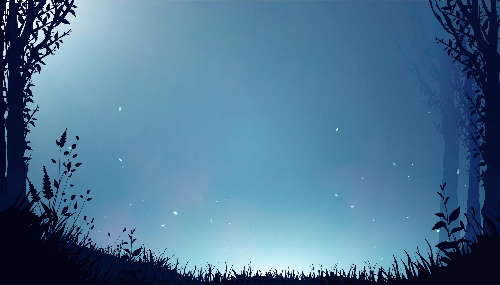

You're beginning to consider the rumors that the bolbeana blossoms are cursed. You let out a little chuckle and dismiss the thought and begin walking through the woods once more. As if they've heard your claim, the trees feel like they're separating for you again. You let out a sigh of relief as you see another clearing ahead. But this one looks a bit different. As you approach you hear some voices chatting loudly nearby. It seems as if they haven't heard you yet.